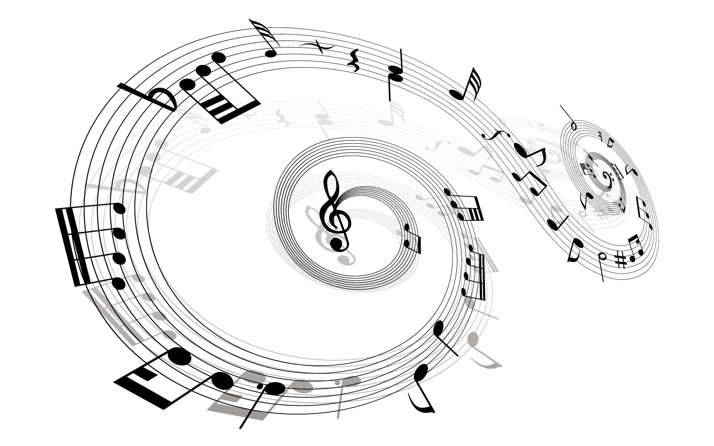

TabbR

Welcome to TabbR. Every musicians best friend
Here at TabbR we aim to provide our users with a fast and easy way to convert their sheet music into tablature. Simply take a photo of your sheet music and upload it. Once on our system we will generate the correct tablature for your instrument.
You need to enable JavaScript to run this app.